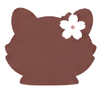
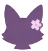
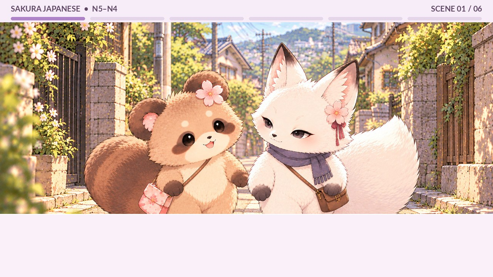
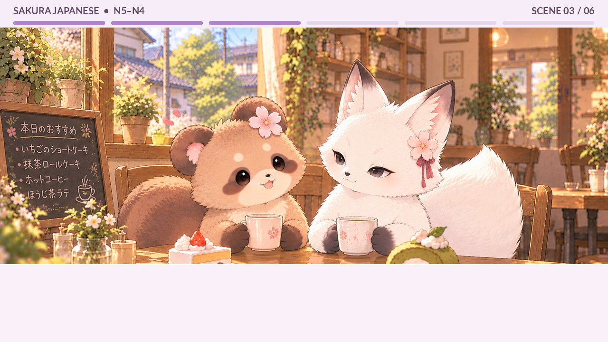
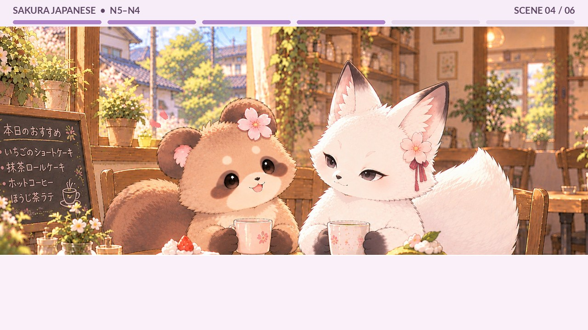
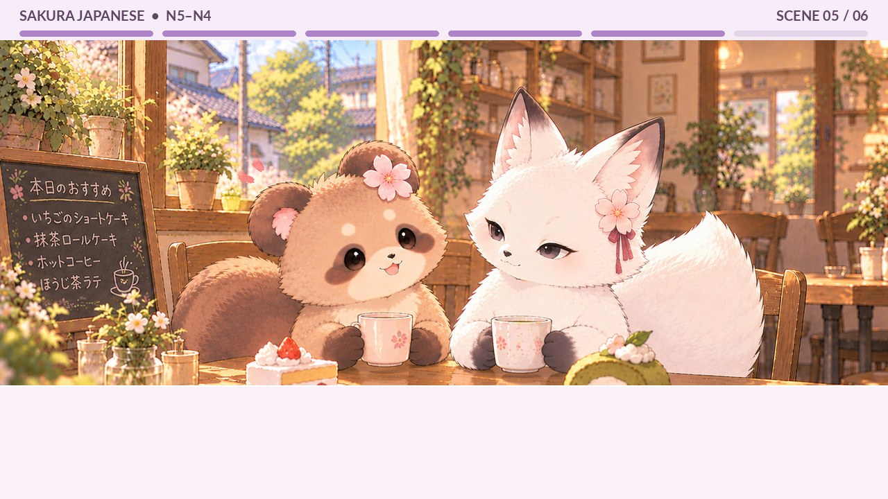
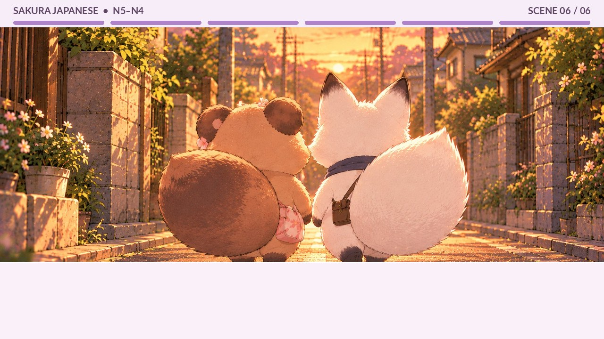

たぬちゃん
Tanu-chan · Tanuki
A tanuki is a Japanese raccoon dog. Raccoon dogs are familiar animals in Japan, but you may not see them very often in many other countries.
A cozy Japanese conversation with two little friends. Listen to their story, follow the dialogue, and pick up useful everyday Japanese along the way.
 a little café adventure ♡
a little café adventure ♡Two friends, one cozy afternoon.

Tanu-chan · Tanuki
A tanuki is a Japanese raccoon dog. Raccoon dogs are familiar animals in Japan, but you may not see them very often in many other countries.

Kicchan · Kita-kitsune
A kita-kitsune is a fox found in Hokkaido, the northernmost main island of Japan. Kicchan and Tanu-chan are good friends.
They're friends! ♥ Let's see what they get up to today.
Try listening first, then use the transcript to catch anything you missed.
Choose a scene. Short grammar tips appear below useful expressions; hide them for reading practice.

A little walk, weekend plans, and a surprise hobby.
土曜日の午後
今日は土曜日です。天気がいいので、たぬちゃんときっちゃんは、近くのカフェに行きます。
It is Saturday. The weather is nice, so the two friends head to a nearby café.
きっちゃん、こんにちは！
Kicchan, hello!
こんにちは、たぬちゃん、今日はいい天気ですね。
Hello, Tanu-chan. The weather is nice today, isn't it?
ですね！昨日は雨でしたけど、今日は晴れていますね。
It is! It rained yesterday, but it's sunny today.
はい、今日はちょっと暖かいですね。
Yes, it's a little warm today.
きっちゃんは、今日は何時に起きましたか？
Kicchan, what time did you wake up today?
今日は9時に起きました、休みの日は、いつも9時くらいに起きます。
そうなんですね。私は7時に起きて、走りに行きました。
I see. I woke up at seven and went for a run.
ええっ、すご～い。
Wow, that's amazing!
帰ってきてから、朝ごはんを食べて、部屋を掃除して、洗濯もしました。
After I got back, I ate breakfast, cleaned my room, and did laundry too.
すごいですねえ！私は、朝ごはんを食べながら、YouTubeを見ました。
That's impressive! I watched YouTube while eating breakfast.
何、見ましたか？
What did you watch?
スクイーズの作り方の動画です。一度作ってみたくて。
It's a video on how to make squishies. I wanted to try making one.
すご～い！今度、教えてください！ああ、カフェが見えてきましたよ。
Wow! Please teach me sometime! Oh, I can see the cafe now.
本当だあ、写真を撮りましょうか？
Oh, there it is! Shall we take a picture?
Choosing cakes and drinks.
カフェで注文
二匹はカフェに着きました。窓の近くの席に座ります。
They arrive at the café and sit by the window.
わあ、いいお店ですね。
Wow, this is a nice place.
ですね、私はこのお店、初めてですけど、もう気に入りました。
It is! It's my first time here, but I already like it.
うちもです。ケーキ、どれにしますか？
Me too. Which cake will you have?
うーん、いちごのショートケーキにします、きっちゃんは？
Hmm, I'll have the strawberry shortcake. How about you, Kicchan?
あ、うちは抹茶のケーキにします。
I'll have the matcha cake.
抹茶、好きなんですか？
Do you like matcha?
はい、大好きで、抹茶のアイスもよく食べます。
Yes, I love it. I often eat matcha ice cream too.
そうなんですねえ。あ、飲み物はなににしますか？
I see. Oh, what would you like to drink?
アイスティーにします。たぬちゃんは？
I'll have iced tea. How about you, Tanu-chan?
私は、アイスコーヒーで。
I'll have an iced coffee.
たぬちゃんは、いつも、アイスコーヒーですか？
Tanu-chan, do you always drink iced coffee?
はい、毎日飲みます。でも、夜は飲みません。
Yes, I drink it every day. But not at night.
どうしてですか？
Why not?
夜にコーヒーを飲むと、なかなか寝られませんから。
Because if I drink coffee at night, I have trouble falling asleep.
なるほど。うちは夜でもよく寝られますよ。
I see. I can sleep well even at night.
いいなあ、うらやましいです。
Lucky you! I'm jealous.

Talking about yesterday and favorite foods.
最近の出来事
ケーキと飲み物が来ました。二匹はケーキを食べながら、話をします。
The cakes and drinks arrive. The friends chat while eating.
いただきます。……あ、おいしい！
Let's eat... Oh, it's delicious!
こっちもおいしいです。抹茶の味が濃くていいです。
Mine is delicious too. It has a rich matcha flavor.
よかったですね。そういえば、昨日は何をしましたか？
That's good. By the way, what did you do yesterday?
昨日はスーパーに行きました。
I went to the supermarket yesterday.
何を買いましたか？
What did you buy?
野菜とお肉を買いました。晩ごはんにカレーを作ったんです。
I bought vegetables and meat. I made curry for dinner.
へえ！カレーですか。いいですね。
Oh, curry! That sounds nice.
はい、久しぶりに作りましたけど、おいしくできて、よかったです。
Yes. I hadn't made it in a while, but it turned out well.
どんなカレーですか？
What kind of curry was it?
じゃがいもとにんじんがたくさん入った、普通のカレーです。
Just regular curry with lots of potatoes and carrots.
おいしそうですね。辛いカレーが好きですか？
That sounds delicious. Do you like spicy curry?
はい。好きですけど、辛すぎるのは苦手です。
Yes, but I'm not good with curry that's too spicy.
私も。中辛ぐらいがちょうどいいですね。
Same here. Medium-spicy is just right.
ですね。次は違うカレーも作ってみたいんです。
Exactly. Next time, I'd like to try making a different curry.

What happens when you forget the oven timer?
たぬちゃんの料理
たぬちゃんは昨日、何をしましたか？
Tanu-chan, what did you do yesterday?
昨日は家でパンを作りました。
I made bread at home yesterday.
へえ！パンですか。すごいですね！
Oh, bread? That's impressive!
でも、ちょっと失敗しました。
But I made a little mistake.
えっ、何があったんですか？
Oh? What happened?
パンをオーブンに入れて、ゲームをしていたんです。
I put the bread in the oven and started playing a game.
うん。
Uh-huh.
ゲームが面白くて、時間を忘れてしまいました。
The game was so fun that I lost track of time.
あっ、もしかして……。
Oh, don't tell me...
そう。パンを焼きすぎました。
Yes. I baked the bread for too long.
あらら。パンは大丈夫でしたか？
Oh no! Was the bread okay?
少し黒くなりました。でも、ちゃんと食べられましたよ。
It got a little black, but I was still able to eat it.
じゃあ、よかったですね。
Well, that's good.
はい。でも、次はちゃんとタイマーを使います！
Yes, but next time I'll definitely use a timer!
忘れたらダメですね。
You mustn't forget!

Making plans to visit an event together.
来週の予定
たぬちゃん、来週の土曜日、何をしますか？
Tanu-chan, what are you doing next Saturday?
まだ決めていません。きっちゃんは？
I haven't decided yet. How about you, Kicchan?
駅の近くでイベントがあるから、行ってみたいと思っています。
There's an event near the station, so I'm thinking of going.
どんなイベントですか？
What kind of event?
食べ物や雑貨のお店がたくさん来るみたいです。
Apparently, there will be lots of food and craft stalls.
へえ、楽しそうですね！
Oh, that sounds fun!
パンのお店もあるみたいですよ。
I hear there'll be a bread shop too.
パンですか！ちょっと気になります。
Bread? That sounds interesting!
よかったら、いっしょに行きませんか？
Would you like to go together?
ええ、いいんですか？行きたいです！
Really? I'd love to go!
楽しみですね。
I'm looking forward to it.
はい、とっても！
Me too, very much!

Dinner plans and a sweet goodbye.
夕方の帰り道
カフェを出ると、もう夕方でした。二匹は家に帰ります。
By the time they leave the café, it is already evening.
今日は楽しかったですね。
Today was fun, wasn't it?
はい、とっても。それに、ケーキもおいしかったです。
Yes, very! And the cake was delicious too.
うちに帰ったら、何をしますか？
What will you do when you get home?
少し本を読んでから、晩ごはんを作ります。
I'll read a little and then make dinner.
今日は何を作りますか？
What will you make today?
今日はオムライスを作ろうと思っています。
I'm thinking of making omurice today.
いいですね！料理が好きなんですね。
Nice! You really like cooking, don't you?
はい。料理を作るのは楽しいです。たぬちゃんは？
Yes, cooking is fun. What about you, Tanu-chan?
まだ決めていません。冷蔵庫を見てから考えます。あ、きっちゃんの家が見えますね。
I haven't decided yet. I'll check the fridge and think about it. Oh, I can see your house, Kicchan.
本当だ。今日は、楽しかったです。ありがとう。
You're right. I had a great time today. Thank you.
こちらこそ。じゃあ、また来週！
Thank you too. See you next week!
うん、またね！
Yeah, see you!
✿ What will next Saturday bring? ✿
Six useful patterns to review. For more examples, see the short notes in the transcript.
After doing…
Use it to say that one action happens after another.
帰ってきてから、朝ごはんを食べました。
After coming home, I ate breakfast.While doing…
Two actions happen at the same time.
朝ごはんを食べながら、YouTubeを見ました。
I watched YouTube while eating breakfast.Want to try doing…
Use it when you want to experience doing something.
一度作ってみたくて。
Because I wanted to try making one.End up doing…
Often shows an unintended result or a feeling of regret.
時間を忘れてしまいました。
I ended up losing track of time.Too much / too…
Attach it to a verb stem or adjective stem to show excess.
パンを焼きすぎました。
I baked the bread for too long.Thinking of doing…
A plan or intention you have been considering.
オムライスを作ろうと思っています。
I'm thinking of making omurice.The story is mainly N5, with some N4-level expressions.
Words and phrases you'll hear in the story.
yesterday
rain
to become sunny
to wake up
to go for a run
laundry
a squishy toy
how to make something
once / one time
shop / café
for the first time
to like / take a liking to
matcha
drink / beverage
every day
not easily (with a negative)
envious / lucky you
said before eating
strong / rich (flavor)
after a long time
vegetables
ordinary / regular
spicy
not good with
medium spicy
mistake / failure
oven
interesting / fun
to lose track of time
to overbake
black
timer
next week
station
miscellaneous goods / crafts
to be curious about
together
something to look forward to
early evening
dinner
omelet rice
refrigerator
to think / consider
likewise / thank you too
No matching words. Try a different search!